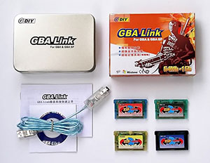
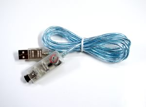
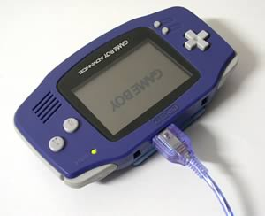
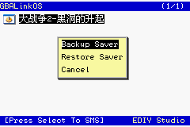
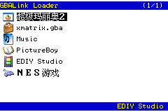

|
GBA
Link烧录系统使用说明
（使用最新的4.40版软件)
GBALink烧录系统是GBA/GBA SP游戏机的辅助设备。利用这套系统可以在GBA/GBA SP上运行各种游戏ROM、各种DEMO、各种第三方软件、电子书、漫画书、电影、图片、音乐等，以达到娱乐及学习、开发等用途。
一、烧写系统

GBALink烧录系统(点击图放大）
GBALink烧录系统包括GBALink烧录器、GBALink FLASH卡带、配套光盘、说明书。
二、运行环境
本系统需要与计算机以及GBA游戏机配套使用。计算机要求486以上。GBALink烧录系统支持GBA、GBASP。
三、系统介绍
GBALink烧录器是本系统的烧写装置，当GBALink烧录器与计算机以及GBA连接后，即可完成对配套的FLASH卡带的烧写等功能。
GBALink FLASH卡带是本系统的存储装置，它可反复擦除和烧写。可以用来备份各种ROM文件（如游戏、电影、电子书、电子相册等）。目前的GBALink
FLASH卡带包括ZIP系列、ZIP_SE和ZIP II系列，容量从64M到256M。
配套光盘包括GBALink烧录程序以及其他相关的软件、工具。
四、系统特点
1.性价比高。具备目前市面烧录卡的所有功能，并有独创压缩功能、超强金手指功能、超级记忆系统（SMS）、实时时钟功能四大特色功能。而价格超低，低于同类产品。
2.体积小，重量轻，携带方便。GBALink FLASH卡带为标准小卡，符合多数人的习惯。
3.GBALink烧录器采用USB接口，体积小巧，外形超酷，无需外接电源，支持热插拔，使用方便。
4.GBALink烧录速度特快。对于ZIP系列卡带，烧写满256M的数据仅需4分26秒，平均每烧写64M仅需67秒。
5.保护金手指。GBALink采用新型的烧录方式，通过GBA的通讯口对卡带进行编程的，因而卡带无需经常插拔，能够有效的保护卡带的金手指，最大限度的防止出现接触不良的问题。
6.容易扩展。GBALink的FLASH卡带价格低廉，并支持自己改卡，用户可以轻松拥有多块卡带。
7.配套软件支持多种语言（包括简体中文、繁体中文、英文）。功能智能化，操作简便。
8.支持合卡功能。合卡菜单程序大小动态分配。合卡菜单程序位置动态分配。合卡兼容性极好。
9.支持GBA游戏、NES游戏、GBA格式的电影、电子书、漫画书、图片查看、音乐播放等功能。
10.支持所有的存档方式，存档兼容性好。
11.首创软件可直接加载各种模拟器的ROM文件，无须复杂的手动转换。目前可以直接支持添加NES（就是曾经红遍大江南北的任天堂公司的红白机）的ROM、GB\GBC（任天堂的GAME
BOY\GAME BOY COLOR掌上游戏机）的ROM、PCE（NEC公司的PC-Engine，最强的8位机）的ROM、GG（即世嘉公司的GAME
GEAR掌上游戏机）的ROM、SMS（世嘉公司的Sega Master System游戏机）等众多的模拟器ROM。
12.首创软件可直接加载ZIP格式的文件。
13.首创WINDOWS化图形界面的合卡选择菜单，有图标提示文件类型。界面亲切，操作方便。
14.首创ROM选择菜单的游戏名中文化。并采用游戏名库，自动加载中、英文游戏名，无需手动输入，更加快捷、方便、直观。
15.支持四键复位功能。游戏复位、合卡菜单复位，四键即可完成。切换游戏，无需频繁开关机。
16.支持密码功能。既可对整个卡带加密码，也可对单独ROM加密码。精彩游戏、图书，加密后自己独享。独特的密码设计，可用游戏中的密技当密码（例如最经典的魂斗罗密技：上上下下左右左右BABA），与游戏机按键直接对应，容易记忆，输入方便。
17.世界首创支持压缩功能，可将压缩后的ROM文件直接烧写到卡带中，成倍扩充卡带容量。128M卡带可容纳256M以上的数据量，256M卡带可容纳512M以上的数据量，512M卡带可容纳1G以上的数据容量。由于采用专用压缩格式，解压缩速度超快，解压缩32M的ROM仅需5秒，解压缩64M的ROM仅需10秒，解压缩128M的ROM仅需20秒。
18.支持超强金手指功能。GBALink的金手指功能将给你提供一把游戏利剑，帮你过关斩将。所谓金手指功能是通过对游戏的修改来达到在游戏中加血、加命、无敌、选关、获得超强装备的目的。GBALink的金手指数量巨大，目前已有1359个；GBALink的金手指功能超强，在GBA端提供金手指选择界面，可以任意选择使用。
19.超级记忆系统（SUPER MEMORY SYSTEM）实现了两大功能，一是实现了存档的压缩技术，可支持1xx个游戏同时存档。二是可将存档压缩后备份到卡带的FLASH区域，相当于超大容量的记忆棒功能，即使电池无电，也能保证存档永不丢失。
20.ZIP系列FLASH卡带采用全新的高速FLASH芯片。擦写寿命超过100万次，烧写ROM快速稳定，无需打任何速度补丁，游戏画面运行流畅。
21.ZIP系列FLASH卡带采用EPLD设计，支持合卡功能。ROM区分块更小，256M卡带最多可同时写入256个ROM文件。
22.ZIP2系列卡带超强省电，有效延长游戏时间，并且使用压缩功能将更加省电。
23.ZIP2FLASH卡带系列支持时钟功能，让游戏中的虚拟世界与真实世界同步。
24.卡带采用可充电锂离子电池。无需定期更换电池，存档永不丢失。
25.对ZIP系列卡带可以对已经烧写好的卡带进行修改、删除和添加ROM。
26.自定义软复位、游戏复位、金手指开关等热键，超强兼容性！
27.软件界面可以更换，二十多种风格任你随意选择。
28.软件不断升级，增加更多新功能，潜力无限。
注：ZIP卡带支持的压缩容量分别如下：
ZIP系列卡带的压缩容量为：256M卡带支持64M及以下容量的ROM压缩功能，128M卡带支持32M及以下容量的压缩功能，64M卡带支持16M及以下容量的压缩功能。
ZIP_SE系列卡带的压缩容量为：256M卡带支持128M及以下容量的压缩功能。
ZIPII系列卡带的压缩容量为：256M卡带支持128M及以下容量的压缩功能；128M卡带支持64M及以下容量的压缩功能。
五、安装及设置
1.软件安装
将光盘插入光驱，安装程序会自动运行。按照常规的方法安装完软件。

2.硬件安装
GBALink烧录器分为USB版和并口版两种。
USB版
USB版的GBALink烧录器一端是USB插头，用于连接计算机的USB口。一端是GBA插头，用于连接GBA或者GBA SP的通讯口。无需外接电源即可使用。使用时将GBALink烧录器的USB插头插在计算机的USB口上，GBA接口插在GBA顶端的通讯口上即可。此时计算机会提示找到EDIY
GBALink USB设备，然后安装上光盘上的GBALink的USB驱动即可，详细安装方法请查看本说明的“USB驱动安装详解”部分。

USB版的GBALink(点击图放大）
打开GBALink软件，在“系统参数”中的“接口设置”一项中选择“USB”，软件即会提示“检测到GBALink”。
并口版
GBALink烧录器的一端是25针插头，用于连接计算机的打印口（计算机的打印口一般位于计算机的背面）。另一端用于连接GBA或GBA SP的通讯口。无需其他的外接电源。使用时将GBALink烧录器的25针插头插在计算机的打印口上，GBA电缆插在GBA顶端的通讯口上即可。
 
GBALink的连接(点击图放大）
启动GBALink配套软件，打开GBA的开关，程序会提示检测到GBALink。
3.设置系统参数

接口设置：如果使用的是USB版，需要设置为USB；如果使用的是并口版，有三项可供选择，一般可选择为：LPT1 (0x378)。也可根据具体情况进行修改。
I/O延迟值设置：如果选择接口为USB，则不会出现这个选项。当选择接口为并口时，才会出现。默认值为0。如果在烧写过程中出现“连接失败”的提示，可把这一项的值增加一级，还不行的话就再增加一级，直到功能正常为止。该项的参数修改后，系统会自动保存，用户只要在第一次使用时调整好，以后不用再修改。
选择语言：这里可以选择软件界面的显示语言。目前可供选择的语言：简体中文、繁体中文、英文。
优先级：这里是调整烧写卡带等操作时的任务优先级。这样如果你的电脑足够的好，并且在烧写卡带等操作数据传输十分稳定，可以把优先级调整为Normal或Low，这样你就可以在烧写卡带等操作时运行其它软件了（比如上网等等）。
游戏名：可选择游戏名的显示方式，游戏名和烧写在卡带中的菜单上显示的名字相同。“自动替换成中文名”指游戏名用中文显示；“自动替换成ROM名”指游戏名用ROM程序内的游戏名显示；“自动替换成英文名”指游戏名用英文名显示。可根据需要进行选择。
不显示启动画面：如果你的计算机比较慢的话，可以选择这一项来跳过GBALink软件的启动画面，以缩短程序的启动时间。
自动检测卡带：如果选中的话，就不用手动进行卡带类型选择了，软件会自动完成选择。
缩减ROM容量：一般的ROM文件都有浪费的空间，选中这个选项程序会自动把这些浪费的空间去掉，这样可以有效减少烧写时间。
烧写卡带后自动更新游戏进度：在烧写卡带完成后如果ROM文件的同一目录下有和ROM文件名相同的存档进度文件(扩展名是SAV)，在烧写完成后会自动更新存档进度文件。
烧写卡带后自动进入合卡菜单：开启这个选项，烧录结束之后GBA自动进入合卡菜单。否则的话，GBA将不进入合卡菜单。
自动打存档补丁：GBA游戏有4种存档方式：SRAM、FLASH、EEPROM、无进度，选中这个选项，程序会自动把FLASH和EEPROM进度存储格式的ROM打补丁，这样游戏就可以在卡带上正确的进行存档了。
合卡不加入菜单程序：在使用具有合卡功能的卡带时，如果你只想写入一个ROM，并且不想加入合卡菜单，可以选中该项。个别游戏由于兼容性问题，当使用合卡方式无法正常运行时，可以选中本项再试。
不使用4键软复位功能：个别游戏由于兼容性问题，当启用4键软复位功能时可能无法正常运行，这种情况可以选中本项取消软复位功能。
卡带密码：选中本项，会对整个卡带加上密码，在GBA上运行时，需要密码才能进入。在PC上设置密码时可以使用密码输入下拉框来选择已经设置好的密码，或者使用特定的按键来手动输入，"I
K J L"是上下左右键，"Z X"是AB键，"A S"是LR键，其中方向键支持4个斜方向。这项功能对ZIP系列卡带和128M专用合卡均可使用。
使用存档备份功能：选中本项，会在卡带中建立一个SMS区域，可将存档数据压缩后写入其中，以保证存档数据永不丢失。
一般情况下，系统参数中的各项使用默认值即可。
4、设置高级选项

这是GBA Link软件的4.40版新增加的功能。如上图，可进行软复位、游戏复位、金手指开/关的自定义热键设置。一般情况下使用默认值，如果当某些ROM中出现热键冲突，只需修改冲突热键重新烧录即可。
需要注意的是：四组热键的设置不要冲突，比如两组热键相同或者一组热键键值包含于于另一组热键设置。
建议：初级用户或者不太理解此设置的用户不要使用高级设置项目，请使用缺省的默认设置。
六、GBALink烧录软件的各项特殊功能的详细介绍
当前最新的GBALink烧录软件是4.40版（软件版本会不断升级，用户可自行到我们的网站：http://www.GBALink.net
下载）
下面将详细介绍本软件的各项特殊功能，主要针对高级用户。一般的操作，请直接查看“快速上手”。
1.压缩功能
压缩功能是GBALink烧录系统独创的功能，它可将压缩后的ROM文件直接烧写到卡带中，成倍扩充卡带容量。128M卡带可容纳256M以上的数据量，256M卡带可容纳512M以上的数据量，512M卡带可容纳1G以上的数据容量。
注： 普通FLASH卡带只能将ROM原封不动的写入到卡带中，这样128M的卡带就只能当128M的用，256M的就只能当256M的用。但拥有了GBALink独创压缩技术的ZIP系列卡带打破了这种局限。通过GBALink特有的压缩技术，可对ROM进行压缩，使其容量大大减小，这样在卡带中占用的空间就非常小，同样容量的卡带就可以写入更多的ROM。例如：普通的256M的FLASH卡带只能写入4个64M的ROM，但64M的ROM经过专用技术压缩后大概只有32M，这样256M的ZIP卡带就可以写入8个这样的ROM，8个64M的ROM的实际容量大概是512M，也就是说256M的ZIP卡带可以容纳数据总量达到了512M。
256M的ZIP卡带容纳了11个64M的游戏，总容量达到了7XXM
如果当前使用的是ZIP系列卡带，那么在添加ROM时，如果ROM的容量符合条件，会遇到是否要压缩的提示。软件会提示“是否压缩ROM？”，你可选择“不压缩”、“专用格式”。

“对当前ROM启用金手指功能”可以在添加ROM时选择是否启用金手指功能，如果此项不可选，说明金手指列表中缺少被添加的ROM的金手指文件或当前ROM不支持金手指功能。
“不压缩”表示ROM文件将不经过压缩直接写入卡带，此时占用的卡带空间较大，但运行前不需要等待。
“专用格式”表示ROM文件将以专用格式进行压缩，并将压缩后的文件写入到卡带中，这样卡带可写入更多的数据量。专用格式由于采用了GBALink的专用压缩技术，在GBA端的解压缩时间非常快，32M的ROM解压缩时间为5秒左右；64M的ROM解压缩时间为10秒左右；128M的ROM解压缩时间为20秒左右。
在GBA上的解压缩过程
压缩功能在容量上存在一定的限制：对于ZIP系列卡带的压缩功能，除了卡带上已标明压缩容量的外，256M卡带支持64M及以下容量的ROM压缩功能，128M卡带支持32M及以下容量的压缩功能，64M卡带支持16M及以下容量的压缩功能。ZIP_SE的256M卡带支持128M及以下容量的ROM压缩功能。ZIPII系列卡带的256M卡带支持128M及以下容量的压缩功能；128M卡带支持64M及以下容量的压缩功能。
2.金手指功能
所谓金手指功能是通过对游戏的修改来达到在游戏中加血、加命、无敌、选关、获得超强装备的目的。
如何使用金手指功能：
(1).在添加好的ROM列表中，编辑某个ROM的属性（双击该ROM或者在该ROM上单击鼠标右键选择编辑属性），在弹出的属性编辑窗口中，
可以看到下面是金手指部分，金手指和ROM会自动对应，当选中某个游戏时，对应的金手指文件就会被自动调出，因此我们进入属性编辑窗口时，即可看到对应的金手指的各个选项已经列出来了。

选中“开启金手指”选项后，可以对金手指选项进行选择或删除，因为这些选项也可在GBA上进行编辑，所以一般可使用默认值，即全部打开。然后单击“完成”即可。
如果想去掉某项金手指，可以单击该项，然后点删除即可。如果要添加自己找到的金手指，可以点添加，然后输入项目的名称以及相关的数值即可。
(2).具有金手指属性的ROM在GBA上运行时，会首先出现金手指选择画面，我们可以随意选择各个选项的值。在GBA上金手指选择界面可显 示英文、简体中文、繁体中文和日文，查看非常方便。另外与金手指卡相比，在GBA上选择金手指功能时，可以支持更多的选项，每个选项下
可支持多个值，比如一些RPG游戏中的道具、武器等，功能更强大。有时候选项非常多，一个一个选择比较麻烦，可以使用快速打开和关闭全部金手指功能：SELECT+A打开全部金手指，SELECT+B关闭全部金手指。
(3).进入游戏中时，可以随时开启或关闭金手指功能，START+L+R:打开金手指，SELECT+L+R:关闭金手指。并且打开或关闭时GBA画面有暂时白屏提示（对于部分游戏白屏提示功能无效，但开关金手指功能正常）。在GBA上的金手指界面增加L+R键返回合卡菜单功能。
在GBA上的金手指界面有一项“Cheat Initial State（全局金手指初始状态）”的选择，这解决了一些必须在游戏中才能打开的金手指引起游戏死机的问题。注意，默认初始状态是OFF（关闭），在游戏中如果要使用金手指时用SELECT+START+R键启用金手指。
(4).原卡带烧写的不压缩游戏启用了金手指功能，在刷新卡带后可以关闭、启用、修改这个游戏的金手指。并且只要原来卡带里不压缩的游戏启用了软复位功能，刷新卡带后这个游戏就可以启用金手指功能。但原来卡带里没有使用软复位或金手指功能的游戏，刷新卡带后将不能启用金手指功能。另外对于压缩的游戏刷新卡带后不能修改金手指属性。
(5).GBALink的金手指数据采用的是国内流行的CHT格式(EmuCheat)，金手指数据来源充足。新游戏的金手指文件更新方便。无需等待软
件更新，对于新推出的游戏，用户可随时把网上或其它地方找到的金手指文件复制到软件对应目录下使用(安装好的GBALink软件的CHEAT目录)。当添加了新的金手指文件时，打开GBALink软件将自动重建金手指的索引文件，如果出现重建索引失败，请检查新加的金手指文件的格式是否正确。
对于直接把网上找到的金手指文件复制到GBALink软件的目录下来增加金手指，将不能实现在加载ROM时自动和ROM对应，要实现自动对应功能需要在cht文件的[GameInfo]中增加一个“RomName”的项目，然后把ROM的ROM名填写到RomName的等号后(对于ROM名的提取方法请查看“4.游戏名的编辑”)，然后把这个cht文件放到安装好的GBALink软件的CHEAT目录下即可。
(6)支持的游戏数量最多，软件自带1359个游戏的金手指，远远超过市面上的各种金手指卡。通过软件版本的升级或者用户自行添加，可以支持更多游戏的金手指功能。
注：
(1).金手指的功能项和设置项数量是有限制的。功能项最大32项，设置项最大15项。在金手指编辑界面对于设置项超出限制的项目显示 为红色，用户可以双击该功能项来选择设置项中的15个值，如果没有选择，在烧写到卡带上时将自动截取前15项。对于功能项超出32项的，
可以使用金手指的“删除”功能把来选择其中的32项，如果在退出ROM编辑时还是超出32项，将出现提示，并且在烧写到卡带上时将自动截取前32项。
(2).金手指功能要利用ZIP卡的特性，所以金手指功能只能使用在ZIP卡上。
(3).由于金手指文件是从网上搜集到的，因此不能保证所有的金手指数据的正确性，个别游戏开启金手指功能时，可能影响游戏的正常运行，对于这种情况，关闭金手指功能即可。
(4).除在ROM属性编辑中可选择是否使用金手指外，在添加ROM时也可直接选择。
3.软复位功能
对于合卡来说，卡带中同时有多个游戏，在运行某个游戏时如果需要回到菜单画面运行其它的游戏，可以关闭GBA，重新启动进入菜单界面，但经常这样会影响开关的寿命，并且操作也不方便，软复位功能是用软件方式来完成软复位回菜单的功能，只要用户同时按下某几个按键即可回到游戏的开始界面或者游戏选择菜单界面。
在烧写卡带的游戏列表中，用户可以通过编辑某个游戏的属性来开启或关闭软复位功能。
GBALink的软复位功能对几乎99.5%的游戏都有效，默认使用SELECT+START+A+B组合键进行游戏复位，使用SELECT+START+L+R组合键返回ROM选择菜单（高级用户可使用高级选项进行自定义设置热键）。这项功能仅对ZIP系列卡带有效。
当开启软复位功能时，如果个别游戏开始运行后不正常，可以使用L+A键“冷启动”方式进入游戏。但L+A键进入时不能使用金手指功能，将直接跳过金手指选择界面。
有的游戏加的有片头（比如一些汉化版的游戏），在添加时，会提示是否去掉片头，但有个别游戏如果去掉片头会造成死机等情况，对于这种游戏不能去片头，即使选择不去片头亦可以正常使用软复位和金手指功能。
4.游戏名的编辑
GBALink系统的一个特点是，支持中文游戏名，并且可以由用户自行编辑。
在系统参数中“游戏名”一项的默认值是“自动替换成中文名”，意思是你添加的每一个游戏，软件会自动找到它的中文名称，并显示出来，并且在GBA上的合卡菜单项中显示的也是中文名称。
另外，游戏名也可由用户自行修改。选中列表中的某个ROM，然后单击鼠标右键，然后选择“属性编辑”，在弹出的窗口中可修改游戏名。修改游戏名除了可以选择已有的中文名、英文名，还可以重新编辑游戏名。
游戏名实际是程序自动在游戏名库中选择的。游戏名库是事先设置好的，它包括各个游戏对应的中文名称、英文名称、ROM名。非常方便的是，游戏名库也可由用户来编辑。
游戏名库的维护：（本项仅对有一定电脑操作水平的用户，一般用户可以到我们网站下载最新版软件即可）
在安装好的GBALink软件的目录下有一个文件：romname.lst，这就是游戏名库，可以用记事本、写字板等工具来编辑。对于一个游戏，它的游戏名包括三部分：ROM名、中文名、英文名。ROM名指ROM程序内的游戏名，ROM名的提取的过程是：首先在“烧写卡带”中添加ROM，之后按前面说的方法，进行“属性编辑”，在游戏名下拉框上点击鼠标右键选择“复制ROM名到剪贴板”，这样就得到ROM名了。中文名是根据游戏的英文名翻译过来的，可以自己翻译，也可以在网上查到。英文名一般都是标准的唯一的。当有新的ROM发表时，可以自行在romname.lst添加这三项信息。但格式一定要严格照前面的格式。需要注意的是，中文名的长度限制为18个汉字，英文名的长度限制为36个英文字符，超长的游戏名在软件提取时会自动截断到允许的长度。
5.密码功能
密码功能可以实现对整个卡带的加密，也可实现对单个ROM的加密。
卡带密码：在系统参数中有“卡带密码”选项，选中本项，会对整个卡带加上密码，在GBA上运行时，需要密码才能进入游戏或者菜单选项。在PC上设置密码时可以使用密码输入下拉框来选择已经设置好的密码，或者使用特定的按键来手动输入，"I
K J L"是GBA的上下左右键，"Z X"是GBA的AB键，"A S"是GBA的LR键，其中方向键支持4个斜方向。这项功能对ZIP系列卡带和128M专用合卡均可使用。

ROM密码：在烧写卡带时，添加的ROM列表中的每个ROM都可以单独加密，具体可以通过编辑ROM的属性来实现。密码的特性和卡带密码相同。不同之处在于，在GBA上，可以出现游戏选择菜单画面，对于加密的ROM，要输入密码才能运行。
GBA上的密码输入界面
注：因为需要保证密码识别的正确，以及识别斜方向，所以在GBA上输入密码时，按方向键时需要一定的延迟，不能太快。
6.时钟功能
（1）.PC端的时钟功能
PC端提供了“时钟同步功能”，这个功能可以自动调整卡带的时钟，令卡带的时钟与PC的时钟同步。
具体操作方法：连接好GBALink系统，插好ZIP II系列卡带，进入等待连接模式。单击“卡带”菜单下的“卡带时钟同步”，会出现“设置卡带时钟”窗口，单击“同步时钟”按钮即可。

另外在ROM的属性编辑窗口，有一项“允许时钟”，对于目前的所有ROM，软件会自动识别ROM是否支持时钟，而自动选择该项。因此用户一般无需手动修改。只有当以后推出的某个新ROM支持时钟，而该项未开启时，才需要手动选中。
（2）.GBA端的时钟功能
对于ZIP II系列卡带，在合卡菜单界面的右下角可以看到时间显示。按“R”＋“B”健是调整时间。
时间的表示方法：年－月－日 [星期] 时:分:秒。例如：2004-07-22 [4] 03:03:02表示2004年7月22日，星期四，03点03分02秒。
校准时间用GBA的左右键来切换要修改的项目，用上下键来修改数值。如果要快速切换项目或数值，可以按键不松手。
修改完毕后，需要按START键，这样才会保存修改的结果。如果要直接退出，可以按B键。
（3）.在支持时钟的游戏中，时钟会自动启用。
7.IPS补丁功能
IPS补丁是一种通用的补丁，网上的这种补丁文件也比较多，通过这些补丁可以对GBA ROM打金手指补丁等。增加这个功能是对本软件的一点补充。该功能对普通卡带、128M专用合卡、ZIP系列卡带、ZIP2系列卡带都有效。这样对于普通卡带如果使用金手指IPS补丁，就可以对普通卡带增加金手指功能。
加载IPS补丁的方法：对于在烧写窗口已经加载的ROM，双击或用鼠标右键打开属性编辑窗口，可以看到一项：IPS，在这里加载你从网上或其他地方找到的与该ROM对应的IPS补丁文件，然后点完成即可。
七、各种操作的详细解释
1.添加ROM文件
关于烧录FLASH卡带的功能都在“烧写卡带”选项中。

烧录卡带之前首先需要选择你所使用的卡带类型，软件右上角有卡带选择框，在这里要正确选择你的卡带的类型。例如：你使用的是256M的ZIP卡带，需要选择“ZIP系列合卡256M”。需要注意的是，当要选择卡带类型时，要求多页夹“烧写卡带”一项中的ROM列表是空的。
先在ROM列表中添加ROM文件，添加ROM文件可以单击“添加ROM”按钮或者在ROM列表上单击鼠标右键在弹出的菜单中选中“添加ROM”来添加。选中这项功能后，会弹出一个窗口，要求你选择一个ROM文件，选择完毕后，ROM就被添加到列表中了。此时，我们可以在列表中看到游戏的各种属性：ROM的文件名、游戏名（可选择用中文或英文显示）、ROM的大小（如果你在系统参数中选中了自动缩减ROM容量，这里将显示缩减后的ROM大小）、ROM的类型（GBA
ROM或者NES ROM）、存档（程序会自动检测ROM有无存档，并显示出来），如果是ZIP系列卡带，还会多出几个选项：“压缩”、“软复位”、“金手指”，这些属性都是可以修改的，双击某个ROM或者在某个ROM上单击鼠标右键，选择编辑ROM属性，都会弹出属性编辑窗口，在这里可以修改这些属性。
另外需要说明的是，用户可以直接添加NES(FC)的游戏，无需用另外的软件转换成GBA格式再添加，使用非常方便。
GBALink系统支持多种FLASH卡带，具体操作也各不相同，下面分别来介绍一下：
（1）对于一般的FLASH卡带，只支持1个GBA游戏和多个NES游戏的合集功能，所以只能向列表中添加一个GBA游戏。下图就是已经添加好的ROM列表：
可以看到，数据容量为32.13M，请使用64M以上容量的卡带烧录。如果要烧录的卡带容量小于提示的容量将无法烧写卡带。
（2）对于专用合卡，可以支持多个GBA ROM的合卡功能。可以在列表中添加多个GBA ROM。下图是添好的ROM列表：
对于具有合卡功能的128M专用合卡，可以在列表中添加最多8个GBA ROM。128M的卡带有四块存档空间，可供四个GBA游戏使用，由于通常最小的GBA游戏是32M的，所以对于128M卡带来说，四个存档空间是足够用了。当四块存档全部被占用后，即使卡带还有剩余空间的情况下（当列表中包含有多个电子书等ROM时），也不能再添加有存档的GBA
ROM，此时，如果用户确实需要再添加有存档的GBA ROM，那么需要手动将前面的某个有存档的ROM的存档属性改为“无”，才能继续添加有存档的ROM。也就是说，总的存档必须保持在4块以内。不过这将会导致两个ROM的存档互相覆盖的问题，因此不推荐用户这样操作。但只要用户不去修改存档属性，存档绝无覆盖的可能。
（3）对于ZIP系列专用合卡，则具备更多的功能。
对于ZIP系列专用合卡，因具有压缩功能，当添加ROM时，软件会提示“是否压缩ROM？”，你可选择“不压缩”、“专用格式”、“ZIP格式”。如果使用压缩功能，则同容量的卡带可以添加更多的ROM。
有的游戏加的有片头（比如一些汉化版的游戏），在添加时，会提示是否去掉片头，如果要使用软复位和金手指功能，则必须把片头去掉。但有个别游戏如果去掉片头会造成死机等情况，对于这种游戏不能去片头，不能使用软复位和金手指功能。
添加好的ROM列表如下图所示。在软件上显示有已经添加到列表中的ROM数据容量，并且提示使用多大容量的卡带烧写，如果卡带容量小于提示的容量将无法烧写卡带。
如果你需要删除已经添加到列表中的某个ROM，可以选中列表中这个ROM文件然后点击“删除ROM”的按钮。
如果你要重新添加ROM，需要把列表中的ROM全删除时，可以点击“全部删除”。
ROM列表中ROM文件的顺序将和烧写后在GBA上出现ROM选择画面中的顺序相同，如果你需要调整ROM的顺序，你还可以用鼠标拖拽ROM文件名前的序号来调整。
另外，游戏的存档大小也可由用户自行修改。在编辑窗口中可修改游戏存档：存档有无、存档空间。关于存档的设置建议使用默认值，除非默认值确实不正确，但修改时应注意，如果把存档改为无，则该游戏将无法实现存档功能，但也不会覆盖其他游戏的存档。如果把存档容量改得更大，则不会影响其他游戏的存档，但会占用更大的存档空间。如果把存档改小，则该游戏在进行存档时可能会覆盖其他游戏的存档。
2.擦除卡带
如果要把ROM文件烧写到一个已有内容的卡带中，首先要执行擦除操作，在执行擦除操作前，要让GBA进入“等待连接模式”。或者你在之前执行过“自动检测卡带类型”等操作，这时GBA上出现EDIY的标志，你可以直接进行擦除操作，不需要重新开关GBA进入“等待连接模式”。
在执行擦除操作时有进度显示，并且状态窗口会显示：正在擦除卡带和擦除的进度，当擦除完成时，程序会提示：擦除卡带完成。
如果卡带是空的话，则不需要执行本操作。
注：
1.等待连接模式

GBA的等待连接模式
当我们要对卡带进行“自动检测卡带类型”、“擦除卡带”、“烧写卡带”、“智能烧写”等功能时，需要让GBA进入一种特定的状态：等待连接模式。进入的方法是：首先同时按下游戏机的START键和SELECT键不松手，然后打开游戏机的电源开关，此时你会听到叮咚两声，GBA进入等待连接模式。在等待连接模式下，GBA的屏幕会一直保持“GAME
BOY”字样，而不会运行卡带中的游戏。如果不这样的话，当GBA中插有卡带，而卡带中有内容时，开启GBA就会开始运行该内容，而不能执行其他操作了。
2.连续操作
软件可以支持连续操作，即不重新开关GBA进行下一个操作。比如：擦除完卡带后不需要重新开关GBA来进入等待连接模式就可以直接进行烧写卡带或更新游戏进度等功能。但如果某个操作中发生错误，这个功能将失效。
3.新卡带一般都是空的，内部没有数据。开机后直接就是等待连接模式，无需执行注1的操作。
3.烧写卡带
当完成了擦除卡带的操作后，就可以使用“烧写卡带”功能来把数据写入到卡带中。烧写过程中软件会提示烧写的进度、烧写的速度、当前已经传输的数据量和当前正在烧写的游戏文件名等，烧写完成后会提示：烧写卡带完成。
4.智能烧写卡带
为了方便用户，我们提供了一种智能烧写卡带的功能，本项功能可以一边擦除，一边烧写，擦除和烧写同时进行，因此可取代前面的擦除和烧写两项功能。使用本功能，无需对卡带进行擦除，要改写卡带的内容可选择本项直接进行。对于用户来说，节省了一步操作，使用更方便。
本项功能之所以称为智能烧写，是指选择本项功能来烧写ROM文件时，程序会自动根据ROM文件的大小，擦除出相应大小的空间，供写入文件，而不是花费更多的时间去擦除整个卡带。换句话说就是用多少空间就腾出多少空间。这样做的最大好处就是当ROM文件小于卡带空间时，能够有效的缩短擦除、烧写时间。
5.追加和删除ROM
对于ZIP系列卡带，即使烧写好游戏的卡带，仍可追加和删除游戏。操作方法如下：
将卡带插入GBA，进入等待连接模式。单击“刷新卡带”，会刷新出卡带内部的游戏列表。然后可以再追加新的游戏，或者删除一个或多个游戏后再添加新游戏，但删除游戏只能从最后一个开始删除。追加和删除完毕后，单击“智能烧写”即可。
“刷新卡带”这项功能不仅可以用于“追加和删除ROM”，还可用于修改ROM的属性：中文名、存档属性、软复位、金手指、ROM密码、卡带密码。
6.游戏存档的备份更新及管理(支持非烧录卡带)
利用这个功能可以把游戏进度备份到计算机的硬盘上，当需要时可将硬盘上的游戏进度再更新到卡带中去。
当你有了备份的游戏进度文件，你还把这个游戏进度文件用在GBA模拟器（比如VisualBoyAdvance）上，或者把GBA模拟器的游戏进度文件写入到卡带上，甚至你还可以把游戏进度文件放在网上和别人共享你的游戏成果了。:)
对于一般的FLASH卡带，备份和更新进度的方法如下：
备份卡带的游戏进度：连接好GBALink，将卡带插入到GBA游戏机中。启动GBALink程序，令GBA游戏机进入等待连接状态。单击卡带菜单下的“自动检测类型并备份”，此时会弹出一个窗口，提示你输入要保存的进度文件的文件名以及路径，之后就开始读出卡带上的进度并按你的要求保存到相应的路径下。
更新卡带的游戏进度：同样需要先连接好GBALink，插入卡带，启动GBALink 程序，令GBA进入等待连接状态。然后单击更新卡带的游戏进度下的“自动检测类型并更新”，此时也会弹出一个窗口，这里要求你在硬盘上选择一个相应的游戏进度文件，然后程序会把这个进度文件写入到卡带中去。
注：GBALink会自动检测游戏的进度空间大小，读写进度的实际容量会根据不同的游戏卡带调整，当GBALink软件上提示“传输进度（32K）”时，就说明当前的卡带的存储进度空间只有32K，但这时保存下来的进度文件还是64K，这是为了和模拟器进度文件兼容而设置的。
如果读写游戏进度时软件提示“未检测到卡带或是不支持的存储类型!”，说明这个卡带不是使用SRAM或FLASH方式存储游戏进度的或者卡带的存档芯片是损坏的。
把游戏进度文件用在GBA模拟器上：（比如VisualBoyAdvance）
首先你需要把读取到的进度文件名改为和你的ROM文件相同的名字，比如原ROM文件名字是007_-_Castlevania_-_Circle_of_Moon_(j).zip，你就需要把进度文件名改为：007_-_Castlevania_-_Circle_of_Moon_(j).sav。然后进入模拟器打开这个ROM，开始玩即可。在你需要时，你也可以把模拟器生成的的进度文件比如：007_-_Castlevania_-_Circle_of_Moon_(j).sav，使用GBALink写入游戏卡带中使用，方法同更新卡带的游戏进度功能。
VisualBoyAdvance模拟器上的游戏进度画面
GBA上游戏进度画面(点击图放大)
GBALink的ZIP系列卡带独具超级记忆系统，对于存档的管理功能更加强大。
超级记忆系统(SUPER MEMORY SYSTEM，缩写为SMS)是GBALink系统最新开创的一种全新存档压缩、备份系统，它包括两个部分：存档压缩功能、超级记忆棒功能。它与GBALink系统的压缩功能相适应，ROM压缩功能可以实现向卡带中写入更多数量的游戏，同时存档压缩功能可以保证每个游戏都能够有独立的存档，并且可实现超级记忆棒功能，保证存档永不丢失。
存档压缩功能
对存档进行压缩，使存档占用的空间大为减小。2M的SRAM存档空间可以同时支持一百多个游戏的存档。这个功能是与ZIP压缩功能相对应的，ZIP压缩功能可以写入更多的游戏，存档压缩功能保证更多的游戏都有存档空间。
//图20，图21
超级记忆棒功能
超级记忆棒功能是可以将RAM区的存档数据备份到FLASH区，实现了记忆棒的功能，保证存档永不丢失。但与普通的记忆棒系统不同的是，特别加入了存档压缩技术，可将存档压缩后备份到卡带的FLASH区，最多可备份128个游戏的存档，仅仅占用192K空间。相当于免费送你一个超大容量记忆棒。
GBALink存档管理包括两部分，一部分是在GBA上完成的，一部分是在PC上完成的。可根据需要进行操作。
GBA上的存档管理：
1. 在合卡菜单界面时，按下“START”键可进入SRAM管理界面（即存档管理界面）。本项仅提供查看和删除存档功能，用于解决以下情况：如果进入游戏时因存档备份区空间不足引起不能保存上一个游戏的存档，用户可以选择是否放弃前一个游戏的存档进入游戏或者取消返回合卡菜单，然后可以删除不需要的存档或用SMS功能备份后删除腾出需要的空间。
但是由于使用了存档压缩功能，可以同时支持1xx个ROM同时存档，并且存档的压缩备份和切换由GBA上的软件自动完成，因此通常情况下，用户无须进行该项操作。
2. 在合卡菜单界面时，按下“SELECT”键可进入SMS管理界面（即记忆棒管理界面）。首先有三个选项：“Backup Saver”（备份存档）、“Restore
Saver”（恢复存档）、“Cancel”（取消）。GBA的上下键用来选择，A键是确定，B键是取消。

“Backup Saver”（备份存档）是将当前选中的游戏的存档备份到卡带的FLASH区。按A键进入备份菜单。菜单栏的最上面提示有当前选中的游戏的名称。GBA的左右键用来快速翻页，上下键用来备份位置，选择“NEW”是将存档备份到一个新位置上，执行完成后提示“done”表示备份存档完成。选择某个现有的存档，是将当前的存档覆盖原先该位置的存档数据。在覆盖前，会有提示框，提示是否覆盖，A键是确定，B键是取消，这样可以防止误操作。对于同一个游戏，进行多次备份时，会在游戏名后加序号来区分，第一次备份的序号为01，第二次为02。覆盖同一个游戏的旧存档时，会沿用原先的序号。

“Restore Saver”（恢复存档）是将FLASH区作为备份的存档恢复到SRAM区供当前选中的游戏使用。按A键进入恢复菜单。菜单栏的最上面提示有当前选中的游戏的名称。GBA的左右键用来快速翻页，上下键用来选择要恢复哪个存档，同一个游戏的多个存档用序号来区分，选中某个存档后，按A键进行恢复，执行完成后提示“done”表示存档完成。
删除存档 在“Backup Saver”（备份存档）界面或者“Restore
Saver”（恢复存档）界面都可以执行删除操作，删除FLASH区的某个存档是用Select键来执行的。删除前会有提示，A键是确定，B键是取消，这样可以防止误操作。
PC上的存档管理：
1.存档数据的备份和更新
操作方法：首先连接好硬件，打开软件，进入等待连接模式。选择菜单中“卡带”一项下的“合卡游戏进度备份及更新”
在弹出的“合卡游戏进度备份及更新”窗口中，选中列表中的某个ROM，单击“备份存档”的按钮是将卡带中该ROM的存档备份到计算机中；单击“更新存档”的按钮是将计算机中的对应该ROM的存档文件更新到卡带中。

注：
“追加和删除ROM”和“备份和更新存档”功能必须使用与原来烧写卡带时的同一版本软件，否则可能不正常。
2.SMS数据的管理（即记忆棒数据的备份和更新）
在“卡带”菜单下，有三项功能。
“备份卡带的SMS数据”和“更新卡带的SMS数据”是对整个SMS数据进行备份和更新。
“卡带SMS数据管理”是单独对某个游戏存档的SMS数据进行备份，还可以在卡带的FLASH区添加新的SMS数据。如果添加或删除SMS数据，则要执行“写回卡带”命令，才能生效。
可以看到，这个窗口有一个启动GBA的按钮，通常更新完存档后，都会重新启动GBA来查看更新后的存档，这样需要重新开关一下GBA的电源开关，为了方便用户，增加了“启动GBA”这个功能，单击这个按钮GBA会自动重新启动，进入游戏。
7.直接支持多种游戏机ROM
GBALink可以直接加载各种游戏机的ROM文件，无须复杂的手动转换。目前可以直接支持添加NES（就是曾经红遍大江南北的任天堂公司的红白机）的ROM、GB\GBC（任天堂的GAME
BOY\GAME BOY COLOR掌上游戏机）的ROM、PCE（NEC公司的PC-Engine，最强的8位机）的ROM、GG（即世嘉公司的GAME
GEAR掌上游戏机）的ROM、SMS（世嘉公司的Sega Master System游戏机）等众多的模拟器ROM。
操作方法如下：
首先切换活页夹到“添加特殊ROM”，然后选择游戏机类型。
然后添加相应的ROM文件。完成后单击“添加到卡带”即可。
然后再切换回烧写卡带，会看到列表中多出一个ROM合集文件。利用GBALink的ZIP系列卡带压缩特性，更可以直接将这些模拟器ROM压缩后写入卡带，占用空间极小，能够容纳更多游戏。
8.不插卡带玩游戏功能
这项功能可以在不插卡带的情况下，在GBA或者GBA SP上运行NES游戏或者符合multiboot格式的其它ROM。由于是在GBA或者GBA
SP的内存中运行游戏，因此关机后游戏会丢失。
任天堂的红白机想当年也是风靡一时，现在能在GBA上玩一玩这些经典游戏，感觉也是很不错的。虽然用FLASH卡带也可以完成这样的功能，但是FLASH卡带是需要另外购买的。现在则可以使用GBALink来完成这项功能，并且无需插任何卡带，当你拿着没有插卡的GBA玩游戏时，你的朋友们是不是感到很奇怪呢。
之所以能够在GBA上玩NES的游戏，实际还是用模拟器来完成的，这里使用的是POCKETNES。我们把POCKETNES内置到了软件中，这样极大的方便了使用，如果以后POCKETNES升级到新的版本，你也可以将新版本的POCKETNES拷贝到GBALink的目录下，然后把它的名字改为EDIY.GBA即可。
下面来讲一下具体的操作：
首先点击多页夹的“上传到GBA”，然后添加ROM，添加ROM的方法同烧写卡带的添加ROM方法。下图就是已经添加好的ROM列表。

需要注意的是由于GBA内存容量的限制，最大只能上传256K的数据，其中除去模拟器占用的空间(V9.8版的POCKETNES占用47K的空间）其它的空间才能用于上传游戏ROM，这样最大只能上传209K的ROM数据。在程序上显示有剩余的空间大小。不过有很多的NES游戏容量很小，即使209K的空间也足够容纳多个NES游戏。所以我们可以在列表中添加多个NES游戏传到GBA上来玩。
因为不用插卡带，所以无需任何按键，打开GBA电源就会进入等待连接状态。然后点击“传到GBA”就可以把游戏ROM传到GBA上了。在GBALink软件的状态窗口可看到传输进度。传输完毕后，GBA即开始运行NES游戏。
GBA上运行NES游戏(点击图放大）
因为游戏程序是放在GBA内存中的，根据内存的特性，我们知道一旦关掉GBA的电源，则内存会因掉电丢失掉内部的所有数据，当再次打开电源，内存中的NES游戏也就不见了。不过POCKETNES从V7A版以后都提供了休眠模式(Sleep)，因此可以让GBA进入休眠模式后而不是关闭GBA，这时液晶屏就会被关掉，所有比较耗电的电路都停止工作，仅仅靠电源保持内存中的数据，因此很省电。
休眠模式(Sleep)功能在POCKETNES功能菜单中，同时按下GBA的L键和R键即可进入到功能菜单选项，在功能菜单，可以用上下键来选择，A键确认，B键（或者再次同时按下L键和R键）退出。
GBA上的功能菜单
9.软件界面可换
GBALink软件界面可以更换，二十多种风格任你随意选择。
MacOS风格的界面
WinXP风格的界面
八、实战
看了上面的说明，可能有的朋友还会有不清楚的地方，下面我们来看看烧录一盘卡带具体该怎么做：
首先在软件的菜单中选择正确的卡带类型。然后在多页夹的“烧写卡带”栏的列表中添加需要烧写的ROM。注意ROM的总容量不要超过要烧写的卡带容量。
连接好GBALink，然后将FLASH卡带插入到GBA的卡槽中，启动GBALink程序，打开GBA的电源，进入等待连接模式（进入等待连接模式的方法如前所述）。计算机端的GBALink程序会提示“检测到GBALink！”。
接下来，可以有两种操作方法：
1. 单击“智能烧写”按钮，再然后就是等待烧写完成的提示了。当烧写完成后，游戏会自动开始运行。
2. 单击“擦除卡带”选项，执行擦除操作，这时状态窗口会提示:正在擦除卡带。擦除完毕后会提示：擦除卡带完成。然后点击“烧写卡带“就开始烧写过程，最后当提示烧写卡带完成后，游戏（或其他程序）会自动开始运行。
可以看出第1种方式会更加方便一些。
如果你使用普通卡带并且选择1个GBA ROM和多个NES游戏烧录，烧写好的卡带在GBA上玩会出现如下选择ROM界面：
如果你使用GBALink专用合卡并且选择多个GBA ROM烧录，烧写好的卡带在GBA上玩会出现如下选择ROM界面：
如果使用ZIP系列专用合卡的话，可以容纳更多的ROM，当一屏显示不下时，会分页显示。在GBA菜单屏幕的右上角会显示当前页/总页数。另外菜单界面使用了图标来表示不同的文件类型，比如：GBA文件、ZIP文件、专用压缩格式的文件、NES游戏、电子书等，非常直观。烧写好的卡带在GBA上玩会出现如下选择ROM界面：

你可以使用GBA的上下键来选择ROM，然后按GBA的A键，相应的游戏就开始运行了。
注：
1.卡带电池的充电
对于128M合卡及最新的ZIP系列合卡，内部使用了充电电池为SRAM芯片供电，这样可以比普通电池更有效的保证游戏进度不会丢失。但在长时间没有使用卡带应当注意，由于充电电池需要充电后才能使用，这时应对卡带电池充电，充电方法即是连续在GBA上使用卡带，这样即可以对卡带充电。
|